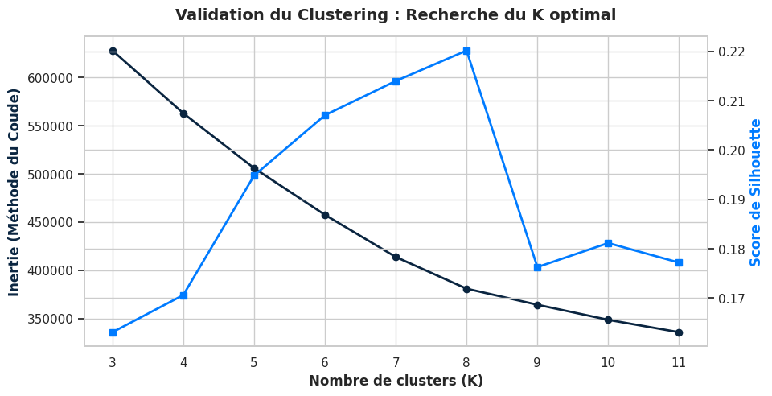
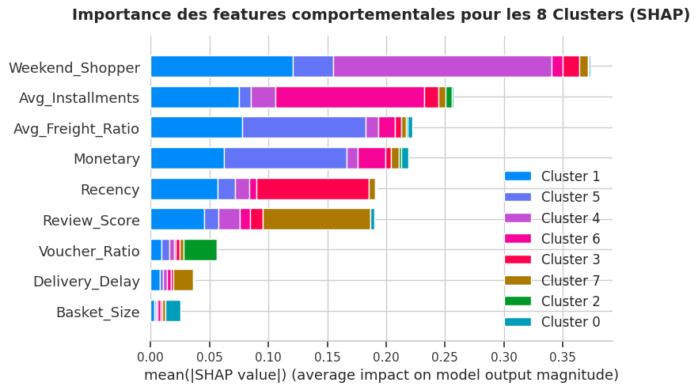
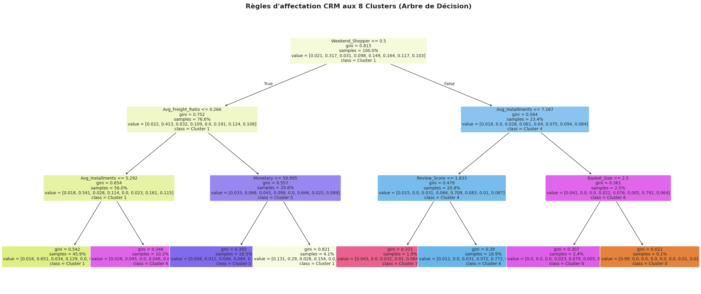

Explainable Customer Segmentation (XAI)
1. L'enjeu : Dépasser le RFM et la "Boîte Noire"
Bien que la segmentation RFM (Récence, Fréquence, Montant) soit le "couteau suisse" du marketing traditionnel, elle reste une méthode descriptive et statique. Dès que l'on cherche à faire de la prédiction fine ou à comprendre la psychologie du client, elle s'essouffle. Mon objectif est double :
- Créer des segments basés sur de véritables comportements d'achat (sensibilité aux frais de port, paiement fractionné, jour d'achat).
- Utiliser des Modèles de Substitution (Surrogate Models) et les valeurs SHAP pour traduire la complexité de ces algorithmes en règles métiers simples pour l'équipe Marketing.
2. Feature Engineering & Clustering
J'ai consolidé les données de plus de 90 000 clients uniques. J'ai enrichi le profil client avec des variables comportementales :
- Weekend_Shopper : Le client a-t-il acheté le week-end ou en semaine ?
- Avg_Installments : Le nombre de mensualités choisies (Indicateur de pouvoir d'achat contraint).
- Avg_Freight_Ratio : Tolérance au poids des frais de port dans la facture totale.
L'algorithme K-Means a identifié 8 clusters optimaux (validés par un pic net du score de Silhouette).

Fig 1 : La méthode du coude ne montre pas vraiment de choix interessant. Par contre le score silhouette indique que 8 clusters seront assez sont denses et bien séparés.
3. IA Explicable (XAI) : La surprise comportementale
L'extraction de l'importance des variables via l'approche SHAP (SHapley Additive exPlanations) sur un Random Forest a révélé un insight métier majeur :

Fig 2 : L'analyse SHAP prouve que les habitudes de vie (Weekend_Shopper) et les contraintes financières (Avg_Installments) dominent totalement la segmentation, reléguant le Montant dépensé au 4ème plan.
Pour fournir des règles actionnables au CRM, j'ai généré un Arbre de Décision (Decision Tree) limité à une profondeur de 3 nœuds (soit 8 feuilles, une pour chaque cluster).

Fig 3 : Extraction de règles "If-Then-Else". La première séparation de la base se fait logiquement sur la nature de l'acheteur (Semaine vs Week-end).
4. Activation CRM & Recommandations
Option 1
L'explicabilité du modèle permet de définir des stratégies de ciblage radicalement différentes selon les personas, dans cette option, j'ai proposé 3 grands groupes définis comme suit :
| Cluster (Persona) | Caractéristique Clé (Règles XAI) | Action CRM Recommandée |
|---|---|---|
| Acheteurs Week-end (Budget Contraint) | Achète le week-end ET utilise beaucoup de mensualités (> 7 fois). | Campagne ciblée : Envoi de SMS le vendredi soir mettant en avant des offres "Buy Now, Pay Later" (Paiement en 10x sans frais). |
| Acheteurs Semaine (Sensibles Logistique) | Achète en semaine ET refuse les frais de port élevés (Ratio < 26%). | Incentive : Ne pas offrir de réduction sur le produit, mais envoyer un email le mardi proposant "Frais de port offerts sur votre prochaine commande". |
| Mécontents Financés | Achète en semaine, peu de mensualités, mais score d'avis très faible (< 1.8). | Service Client : Scénario anti-churn immédiat. Appel sortant pour comprendre l'insatisfaction avant toute tentative de re-ciblage promotionnel. |
Option 2 - (Les 8 Personas)
L'extraction des règles de l'Arbre de Décision nous permet de dresser un profil exact des 8 clusters identifiés. La base se scinde d'abord culturellement (Semaine vs Week-end), puis financièrement (Paiement fractionné et Frais de port).
| Cluster (Persona) | Règles d'affectation XAI | Action CRM & Stratégie Recommandée |
|---|---|---|
| 👇 BRANCHE SEMAINE (Weekend_Shopper = Non) | ||
| Cluster 1 : Le Cœur de Cible | Semaine + Frais de port faibles (<26%) + Peu de crédit (<5x). | Animation classique : Newsletters régulières les mardis/jeudis. Ciblage standard pour les nouveautés. |
| Cluster 6 : Les Contraints | Semaine + Frais de port faibles + Fort crédit (>5x). | Conversion : Mettre en avant les facilités de paiement (BNPL) plutôt que le produit lui-même dans les emails. |
| Cluster 5 : Les Pénalisés de la Logistique | Semaine + Forts frais de port (>26%) + Petits paniers (<60R$). | Incentive : Offrir la livraison (Free Shipping) déclenchera immédiatement le réachat chez ce profil frustré. |
| Cluster 2 : Les Premium / Pressés | Semaine + Forts frais de port + Gros paniers (>60R$). | Upsell Services : Insensibles au coût logistique. Pousser des abonnements type "Livraison Express illimitée" ou "VIP". |
| 👇 BRANCHE WEEK-END (Weekend_Shopper = Oui) | ||
| Cluster 4 : Les Relax Satisfaits | Week-end + Crédit standard (<7x) + Bonne notation (>1.8). | Engagement : Pousser des offres "Coups de cœur" le samedi matin (Lifestyle, plaisir). |
| Cluster 7 : Les Détracteurs | Week-end + Crédit standard + Note catastrophique (<1.8). | Care (Anti-Churn) : Exclure des campagnes promos. Déclencher un appel du service client ou un email d'excuses avec dédommagement. |
| Cluster 3 : Les Petits Budgets | Week-end + Fort crédit (>7x) + Petit panier (<2.5 articles). | Accessibilité : Pousser des offres agressives (Ventes Flash, Destockage) ciblées sur le samedi soir. |
| Cluster 0 : Les Gros Projets | Week-end + Fort crédit (>7x) + Gros paniers (>2.5 articles). | Cross-Selling : Clients en phase d'équipement (déménagement, cadeaux). Pousser des produits complémentaires avec financement. |
Accéder au code source
Découvrez la pipeline complète de Machine Learning, de l'ETL (5 tables jointes) à l'analyse XAI :